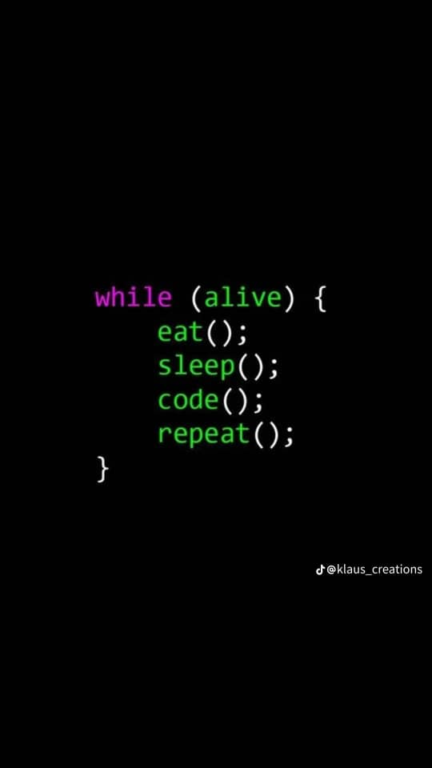

See our blog Categories
by Dolsy Code, UPDATED ON OCTOBER 20, 2023
Let's get started
Imagine being passionate about your skills, solving complex problems, working on interesting projects. Maybe you're bored at your current skills or get tired at your current skills. Maybe you feel stuck with no room to grow, or perhaps you wish you had the option to work remotely or even freelance. If any of these sound like you, it may be time to make a change. It might take little time or more time to consider to get a new skills or get adapt to the new skills. Whether you end up working on your new skills or thinking of holding onto your current skills, then, Why don't you try being a web developer or software engineer.
If you're looking to make the move, then DOLSY Foundation is here to help is a company that is into programing. There are alot of DOlSY online materials that teaches people how to code master the fundamentals of programming also there are Videos for people who get passion using videos to learn and there are good and dedicated support team of mentors, tutors, and career specialists to help you forge a successful career in programming. here is the link to Dolsy company https://dolsycompany.com
Things I like doing:
Things I hate doing: